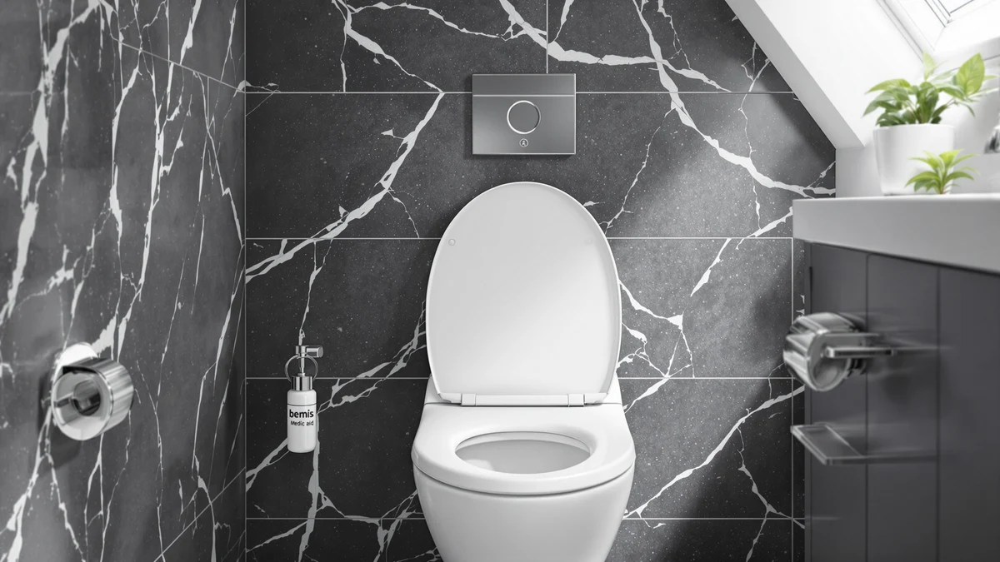

Bemis MA2050T Medic-Aid Closed Front Toilet Seat Review (2026): Worth It?


Quick Answer
The Bemis MA2050T Medic-Aid closed front toilet seat is a medical-grade, elongated plastic-and-wood seat priced at $215.99, built for care facilities and home bathrooms that need extra durability. It costs well above standard closed front seats, so we recommend it mainly for buyers who specifically need the medical-grade spec rather than everyday home use.
Our pick: BEMIS MA2050T Medic-Aid Closed Front — $215.99 Check Price on Amazon
Bottom line: our top pick is the BEMIS MA2050T Medic-Aid Closed Front Toilet Seat with Safety at $215.99.
Things to Know Before You Buy
- At $215.99, the Bemis MA2050T Medic-Aid costs 30 to 65 percent more than the Mayfair and Bemis alternatives covered in this review.
- It is built to an elongated, closed front profile, so measure your bowl before ordering since it will not fit a round-bowl toilet.
- The listing lists a plastic and wood construction, which the manufacturer rates for the heavier use a care facility or shared bathroom sees.
- Amazon's listing does not carry a published star rating or review count for this seat, so we cannot cite one here.
- If your main goal is a reliable everyday seat rather than a medical-grade one, the Mayfair Cassel or Mayfair Linden cover the same elongated fit for less.
This Bemis MA2050T Medic-Aid closed front toilet seat review compares the manufacturer's listed specs, the current Amazon price and the available owner feedback against three lower-priced alternatives from Mayfair and Bemis. The seat targets a specific buyer: facilities and households that need the medical-grade build care facilities and medical offices order.
At $215.99, the Bemis MA2050T sits well above the other elongated closed front seats we cover here, and that gap is the central question of this review. We researched what the price actually buys you, where the Mayfair Linden and Mayfair Cassel close the gap on comfort and fit, and when the Bemis Assurance 3-inch raised seat might serve a similar need at a lower cost.
Why You Should Trust Us
Ilane Tall covers toilet seats and bathroom accessibility products for Best Toilet Seats. For this Bemis MA2050T Medic-Aid closed front toilet seat review, she compared the manufacturer's spec sheet, the current Amazon listing and pricing, and patterns in available owner feedback for the seat and its closest competitors. We do not run a physical testing lab and we do not buy or install the products we cover. Our reviews are built from verifiable manufacturer data, current pricing and the research we can document, so every claim here traces back to a source you can check yourself.
We update the pricing and availability figures in this review on a rolling basis, so the numbers you see reflect what Amazon listed at the time of the most recent update rather than a figure pulled once and left to go stale. When a manufacturer spec changes or a listing is discontinued, we revise the comparison rather than leave an outdated claim standing.
Our Research Process
We built this Bemis MA2050T Medic-Aid closed front toilet seat review from research, not from owning or installing the seat ourselves. Our method started with the manufacturer's listed specs: material, bowl shape, hinge type and the elongated fit. From there we pulled the current Amazon price and cross-checked it against the three alternatives we selected because they target the same elongated closed front category at a lower price point.
We looked for a published star rating or review count on the Amazon listing and found none at the time of writing, so we have not stated one in this review. Where owner feedback exists for comparable Bemis and Mayfair seats, we noted the patterns that came up consistently, and we excluded any seat that did not match the elongated closed front format this page is about.
We also excluded round-bowl seats, seats with an open front design, and any listing that did not specify the material and construction clearly enough to compare against the Bemis MA2050T. That left us with the Mayfair Linden, the Mayfair Cassel and the Bemis Assurance 3-inch raised seat as the most relevant alternatives, since each one is sold through the same marketplace, targets an elongated bowl, and is priced well below the Medic-Aid model.
Overview & Specs

BEMIS MA2050T Medic-Aid Closed Front
What we like
- Built to a medical-grade spec that care facilities order, which points to a sturdier hinge and frame than a typical consumer seat
- Closed front elongated design fits the majority of elongated bowls installed in US homes
- Plastic and wood construction matches the durability expectations of a shared or high-traffic bathroom
Flaws but not dealbreakers
- At $215.99 it costs 30 to 65 percent more than the Mayfair and Bemis alternatives in this review
- No published star rating or review count on the Amazon listing, so there is less public feedback to weigh than for the Mayfair seats
- The medical-grade build is more durability than a buyer wanting a reliable everyday replacement seat needs
| Material | Plastic / wood |
| Size | Elongated - Open Front Seat with Cover |
The Bemis MA2050T Medic-Aid closed front toilet seat is built around the elongated, closed front profile most US toilets use, with a plastic and wood construction the manufacturer positions for medical and institutional settings. That positioning explains the $215.99 price tag: you are paying for a build rated for the frequent use and cleaning a care facility sees.
For a household bathroom, that spec can be more durability than most people need day to day. It makes the most sense if you specifically require a medical-grade seat, for example after a referral from a care provider or for a shared bathroom in an assisted living setting, rather than as a general replacement for a worn-out seat.
Facility buyers ordering seats in bulk also tend to prioritize consistent specs across units over the lowest unit price, and the Bemis MA2050T is built for exactly that kind of procurement. A single household replacing one seat does not face the same pressure, which is why the price-to-benefit calculation looks different depending on who is buying.
What We Liked
The strongest case for the Bemis MA2050T Medic-Aid closed front toilet seat is its positioning. Bemis builds this line for care facilities and medical offices, environments where a seat gets cleaned and used far more often than in a typical home. The spec sheet reflects that: a reinforced hinge assembly and a frame rated for heavier, more frequent use than a standard consumer seat.
The elongated closed front shape also means it drops into most US bathrooms without a bowl swap. Owners shopping in this category consistently look for exact-fit replacements, and the elongated profile here matches the bowl shape found in the majority of homes built or renovated since the 1990s.
Bemis has manufactured toilet seats for decades, and the Medic-Aid line specifically draws on that institutional manufacturing experience rather than a newer or less established supply chain. For a facility manager comparing vendors, that track record carries weight beyond the spec sheet itself.
What Could Be Better
Price is the main obstacle with the Bemis MA2050T. At $215.99, it costs 32 percent more than the Mayfair Linden, 43 percent more than the Bemis Assurance 3-inch raised seat, and 66 percent more than the Mayfair Cassel. For a buyer who does not need the medical-grade build, that premium is hard to justify against seats that cover the same elongated closed front fit.
The listing also lacks a published star rating or review count, which means we have less public feedback to weigh than for the three alternatives covered below. Buyers who rely heavily on verified owner reviews before purchasing may want to factor that gap into the decision.
The MA2050T name itself signals its institutional roots, and the product photography and description lean functional rather than polished for a retail audience. That is not a defect, but it does mean the listing reads differently than a seat designed primarily for home shoppers browsing Amazon.
Who Is It For?
The Bemis MA2050T Medic-Aid closed front toilet seat fits buyers who need a medical-grade seat, such as facility managers stocking bathrooms for a care home, medical office administrators, or homeowners who were told by a care provider to look for this exact category of seat. If that describes your situation, the extra durability and the elongated closed front fit make this a reasonable match for the price.
If you want a dependable replacement seat for a home bathroom and do not need the medical-grade spec, you are likely better served by one of the lower-priced alternatives below. They cover the same elongated closed front fit without paying for a durability tier built for institutional use.
Caregivers shopping for a parent or family member often sit between these two profiles. If the goal is simply comfort and a secure fit, the lower-priced options are usually enough. If the bathroom sees heavier use from multiple people or needs to meet a facility's procurement standard, the Bemis MA2050T's institutional-grade build is the more defensible choice.
Alternatives to Consider
We selected these three alternatives because each one covers the same elongated closed front category as the Bemis MA2050T at a meaningfully lower price, so you have a direct comparison before committing to the medical-grade premium.

Also Great
Mayfair Linden Slow Close Toilet
A slow close elongated seat at $163.11, the lowest-priced seat here that still closes gently instead of slamming.
$163.11
Check Price on Amazon
Also Great
Bemis Assurance 3" Raised Toilet
A Bemis-built raised seat at $150.35, worth a look if you need extra seat height alongside Bemis durability.
$150.35
Check Price on Amazon
Best Value
Mayfair Cassel Slow Close Toilet
The lowest-cost option at $129.95, a straightforward slow close elongated seat for buyers who do not need the medical-grade spec.
$129.95
Check Price on AmazonFrequently Asked Questions
Final Verdict
Our Bemis MA2050T Medic-Aid closed front toilet seat review comes down to one question: do you need the medical-grade build Bemis sells this seat for? If yes, the $215.99 price reflects a legitimate durability tier built for care facilities and heavy use, and it is a reasonable buy. If you want a dependable elongated closed front seat for a home bathroom, the Mayfair Cassel and Mayfair Linden cover the same fit for significantly less, and the Bemis Assurance 3-inch raised seat is worth a look if added height matters more to you than the medical-grade spec.